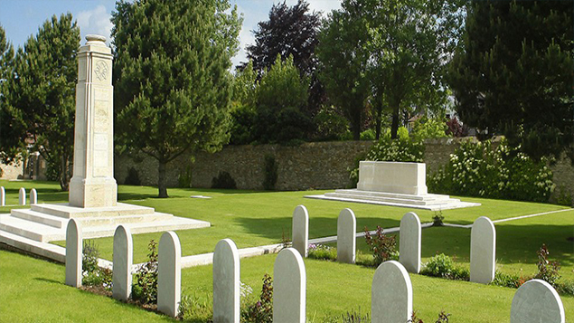
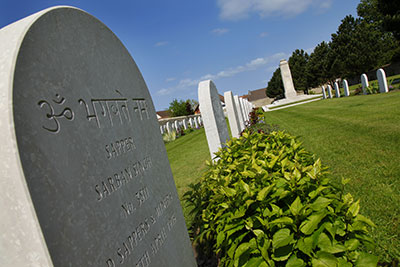

Le Meerut Military Cemetery occupe l’emplacement de l’hôpital qui, d’octobre 1914 à novembre 1915, a accueilli les blessés de la division indienne Meerut, à Saint-Martin-Boulogne. La division Meerut, du nom d’une ville de l’Uttar Pradesh en Inde, constitue avec la division Lahore la force expéditionnaire de l’Armée des Indes, alors britanniques, qui débarque à Marseille en septembre 1914.Les soldats de ce Corps Indien sont aussitôt envoyés sur le front des Flandre, entre Ypres et La Bassée. En mars 1915, ils participent à l’offensive britannique sur Neuve-Chapelle et Aubers et laissent 4 047 hommes sur le terrain.

Meerut Military Cemetery
"Le cimetière des soldats indiens et des ouvriers égyptiens."
Ces désastres affaiblissent les Indiens qui souffrent des rigueurs de l’hiver dans le Nord de la France, dans le froid et la boue des tranchées. Ils pâtissent aussi des carences du système d’approvisionnement, incapable de leur fournir vêtements chauds et nourriture correcte. Toutes ces raisons incitent l’Etat Major à transférer fin 1915 la division Meerut vers l’Afrique de l’Est, l’Egypte et la Mésopotamie. L’hôpital militaire de Saint-Martin est fermé. Le cimetière militaire attenant compte alors les 279 tombes ainsi qu’un mémorial rappelant les noms de 32 officiers et hommes de troupe incinérés dans l'enceinte du cimetière.

Meerut Military Cemetery
En 1917, y seront aussi inhumés les corps de 26 ouvriers égyptiens tués lors du bombardement de Boulogne-sur-Mer par l’aviation allemande, dans la nuit du 4 au 5 septembre. Ces Egyptiens faisaient partie des Labour Corps, unités de travail composées de civils volontaires, créées par l’armée britannique pour décharger les combattants des contingences matérielles autres que militaires. Ils travaillent notamment au terrassement des tranchées, à l’entretien des routes et au déchargement des bateaux. En 1918, l’Egyptian Labour Corps comptera jusqu’à 100 000 manœuvres, employés aussi bien sur le front français qu’au Moyen Orient.